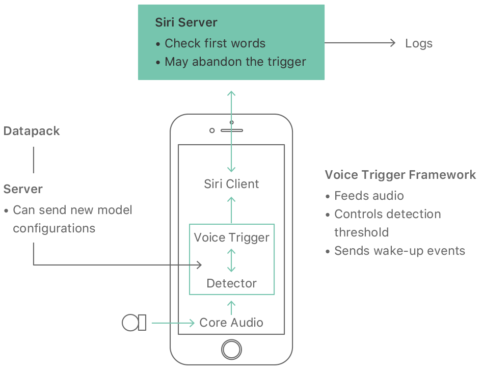
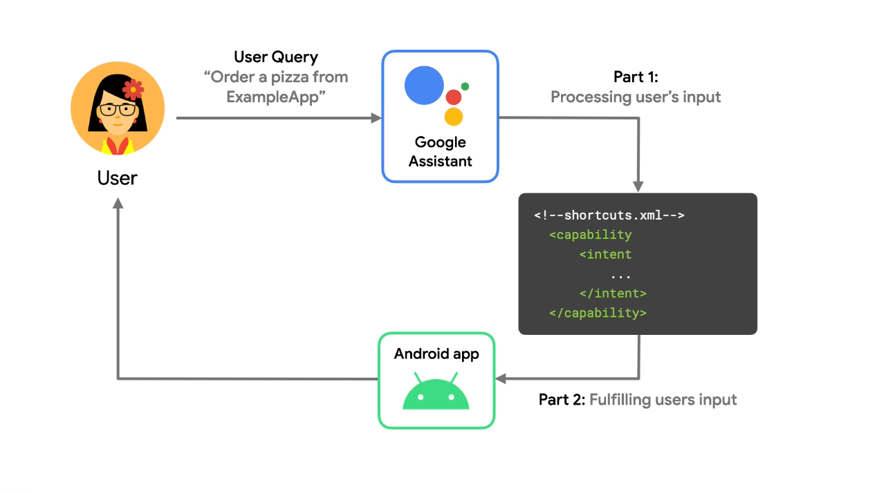

Virtual Assistants¶
Author: Marco Mollo
TL;DR¶
Virtual assistants like Siri, Alexa, and Google Assistant rely on Natural Language Processing (NLP) for seamless interactions.
Introduction¶
This article will feature the underlying technology, how virtual assistants work, and how we as developers can use them.
Underlying Technologies¶
This section will cover the underlying technologies of virtual assistants.
Speech Recognition¶
Siri, Alexa and Google Assistant use Advanced automatic speech recognition technology to convert spoken language into text. To make this possible, ML models are trained on large data sets. The models are trained to recognize the patterns in the speech and convert them into text. The more data the model is trained on, the more accurate it becomes.
NLP¶
As discussed in the lecture, the text is extracted and a context for the user queries is obtained from it.
- Alexa has new Alexa Large Language Model LLM since 20.09.23
- Siri uses CNN's and LSTM
- Google probably uses BERT but there is no further information available
Dialog Management¶
All three use dialog management systems to maintain context and a conversation across multiple requests. So basically you can remember previous requests.
Machine Learning & AI¶
ML and AI play an important role here because they improve the performance of voice assistants over time. They learn continuously from user interactions and adapt to user preferences.
Cloud-Based Processing¶
Most of the work is done in the cloud. This gives the voice assistants access to extensive computer resources and databases, allowing them to respond quickly and accurately.
Wake Word Detection¶
The wake word detection is the word that activates the voice assistant. For example, "Hey Siri" or "Alexa". The wake word detection is always active and listens for the wake word. When the wake word is detected, the voice assistant starts listening to the user's request.
Integration with Services¶
The Virtual Assistants are linked to many online services so that they can transmit information, for example that they can provide information about the weather.
Privacy and Data Security¶
User data sent to the cloud is anonymized and encrypted for protection.
How Virtual Assistants Work¶
The following steps are performed when a user interacts with a voice assistant:
- The user says the wake word
- The voice assistant starts listening to the user's request
- The voice assistant converts the speech into text
- The text is sent to the cloud for processing
- The text is analyzed and a response is generated
- The response is sent back to the user
Siri¶
In this example, the user says "Hey Siri", which triggers the wake-up call and records everything else. Siri converts the voice to text and sends it to the cloud for processing. The text is analysed and a response is generated. The reply is sent back to the user.

Alexa¶
This picture shows the same process for Alexa. The user says "Alexa" and the voice assistant starts listening to the user's request. The voice assistant converts the speech into text and sends it to the cloud for processing. The cloud sends requests to the services and generates a response. The response is sent back to the user.
Google Assistant¶
In this example, the user says "Hey Google, order a pizza from ExampleApp". The Google Assistant takes this input and looks in the shortcuts.xml to see if there is an intent that matches the user's request. If there is a match, Google Assistant sends the request to the application. The app then processes the request and sends a response back to Google Assistant. Google Assistant then sends the response back to the user.

Developer Interaction¶
- You can integrate Siri with SiriKit for natural langaugae app interactions
- You can integrate Alexa with Alexa Skills Kit for custom skills and interactions
- You can integrate Google Assistant with Actions on Google for extending Assistant capabilities
Example for Alexa Skill Kit¶
In this example I created a skill that can tell you what food is available in a restaurant. The skill has two intents. The first intent is the FoodInfoIntent. This intent tells you what food is available. The second intent is the FoodRequestIntent. This intent tells you if a specific food is available.
class FoodInfoIntentHandler(AbstractRequestHandler):
"""Handler for Food Info Intent."""
def can_handle(self, handler_input):
# type: (HandlerInput) -> bool
return ask_utils.is_intent_name("FoodInfoIntent")(handler_input)
def handle(self, handler_input):
# type: (HandlerInput) -> Response
speak_output = "I have bananas, apples, pasta and pizza"
return (
handler_input.response_builder
.speak(speak_output)
.ask(speak_output)
.response
)
class FoodRequestIntentHandler(AbstractRequestHandler):
"""Handler for Food Request Intent."""
def can_handle(self, handler_input):
# type: (HandlerInput) -> bool
return ask_utils.is_intent_name("FoodRequestIntent")(handler_input)
def handle(self, handler_input):
# type: (HandlerInput) -> Response
slots = handler_input.request_envelope.request.intent.slots
foodtype = slots["foodtype"].value
if foodtype.lower() == "bananas" or foodtype.lower() == "banana":
speak_output = "Yes we have bananas"
elif foodtype.lower() == "steak":
speak_output = "No we don`t have steak"
else:
speak_output = "Sorry I dont know what you mean"
return (
handler_input.response_builder
.speak(speak_output)
.ask(speak_output)
.response
)
Key Takeaways¶
- Virtual Assistants are a great example of how NLP can be used in real life
- As developers we can use the underlying technologies to create our own voice assistants
- The underlying technologies are very complex and require a lot of data to work properly
- It is easy to use with the developer tools provided by the companies